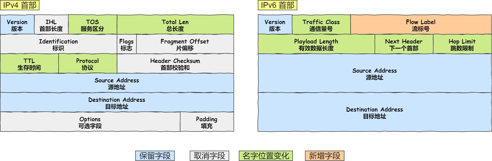

ip协议
参考文章
0 1 2 3
0 1 2 3 4 5 6 7 8 9 0 1 2 3 4 5 6 7 8 9 0 1 2 3 4 5 6 7 8 9 0 1
+-+-+-+-+-+-+-+-+-+-+-+-+-+-+-+-+-+-+-+-+-+-+-+-+-+-+-+-+-+-+-+-+
|Version| IHL |Type of Service| Total Length |
+-+-+-+-+-+-+-+-+-+-+-+-+-+-+-+-+-+-+-+-+-+-+-+-+-+-+-+-+-+-+-+-+
| Identification |Flags| Fragment Offset |
+-+-+-+-+-+-+-+-+-+-+-+-+-+-+-+-+-+-+-+-+-+-+-+-+-+-+-+-+-+-+-+-+
| Time to Live | Protocol | Header Checksum |
+-+-+-+-+-+-+-+-+-+-+-+-+-+-+-+-+-+-+-+-+-+-+-+-+-+-+-+-+-+-+-+-+
| Source Address |
+-+-+-+-+-+-+-+-+-+-+-+-+-+-+-+-+-+-+-+-+-+-+-+-+-+-+-+-+-+-+-+-+
| Destination Address |
+-+-+-+-+-+-+-+-+-+-+-+-+-+-+-+-+-+-+-+-+-+-+-+-+-+-+-+-+-+-+-+-+
| Options | Padding |
+-+-+-+-+-+-+-+-+-+-+-+-+-+-+-+-+-+-+-+-+-+-+-+-+-+-+-+-+-+-+-+-+
Version: ipv4固定是4.
IHL: Internet Header Length，若值为5表示ip头是5*4字节
Type of Service:
Bits 0-2: Precedence.
Bit 3: 0 = Normal Delay, 1 = Low Delay.
Bit 4: 0 = Normal Throughput, 1 = High Throughput.
Bit 5: 0 = Normal Relibility, 1 = High Relibility.
Bits 6-7: Reserved for Future Use.
Total Length: ip头+网络包的大小
Identification: ip包的唯一标识
Flags:
Bit 0: reserved, must be zero
Bit 1: (DF) 0 = May Fragment, 1 = Don't Fragment.
Bit 2: (MF) 0 = Last Fragment, 1 = More Fragments.
Fragment Offset: This field indicates where in the datagram this fragment belongs.
第1个Fragment，Offset=0，第2个Fragment，Offset=第1个Fragment网络包长度 / 8
Time to Live: 每经过一个设备就减1，=0则设备直接丢弃它
Protocol: 指出上一层的协议
Header Checksum: 只校验ip头，不校验网络包
Src Address: 源始ip
Dst Address: 目标ip
